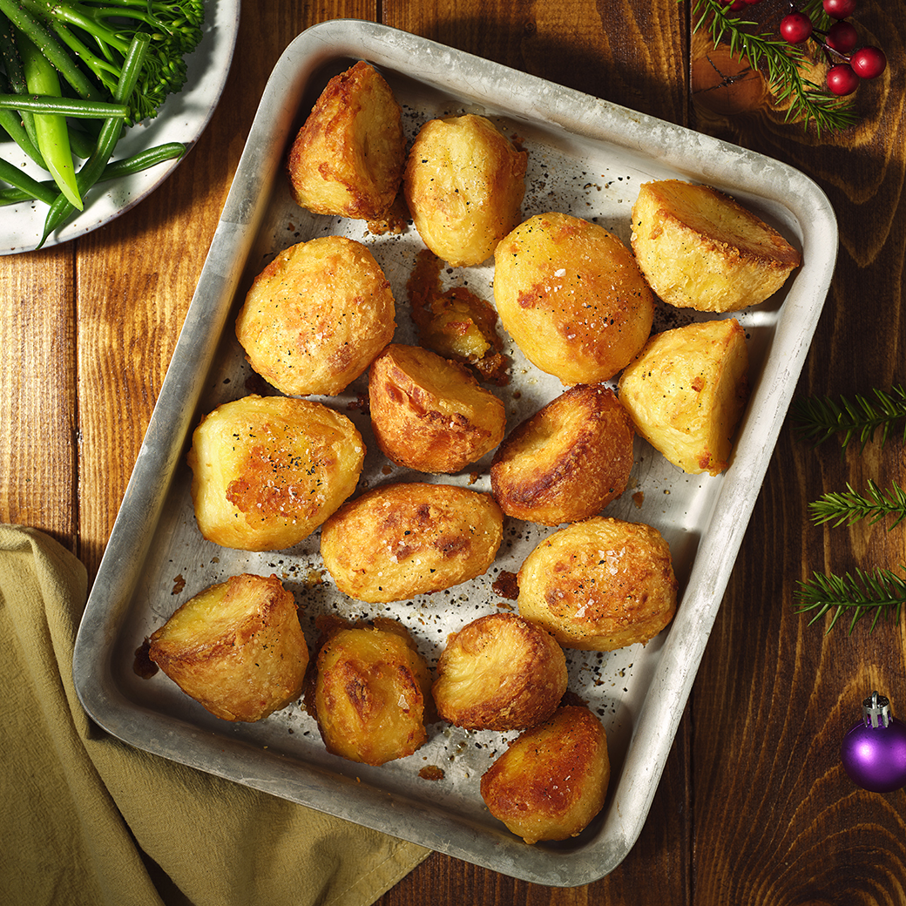

Roasted Potatoes

Description
This recipe is based on the classic British roasted potatoes.
Parboiling the poatoes allows the outside to get super crispy, while ensuring the insides stay nice and fluffy.
You can use any kind of seasoning you prefer, but refrain from putting garlic powder on the poatoes before cooking, as they are likely to burn.
Ingredients
- 1 Russet potato
- Salt
- Pepper
- Olive oil
- Baking powder
Steps
- Set the oven to 450 degrees Fahrenheit
- Fill a pot with water, add salt and about 1/2 tsp of baking powder and set the pot to boil
- Cut the potato into large quarters (or the preferred size)
- When the water has come to a boil, add the potatoes and boil for 10 minutes or until you can easily pierce the potato with a fork
- Drain the potatoes and wait for them to stop steaming
- In a bowl, add the potatoes with salt, pepper and lots of oil
- Vigourously shake the potatoes with the salt, pepper and oil
- Put the potatoes on a baking tray and place it in the over for 25 minutes
- Afterwards, flip the potatoes and bake for another 20 minutes